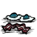

培根煎蛋
Bacon and Eggs

属性
20
75
5
食物类型 肉类
烹饪时间 40 秒
腐烂时间 20 天
堆叠上限 40
代码 "baconeggs"
制作
50%概率生成
怪物千层饼
说明
培根煎蛋只能由[烹饪]产生。烹饪配方为：[肉度]大于1，[蛋度]大于1，没有[蔬菜度]。优先级为10，需要花费40秒。
提示
使用两个[鸟蛋]、两个[怪物肉]作为食材，有50%几率做出培根煎蛋，50%几率做出[怪物千层饼]。如果玩家后期拥有大量获取怪物肉的来源，通过鸟笼将怪物肉换成鸟蛋，使用2个鸟蛋+2个怪物肉进行烹饪，这样平均每八块怪物肉可以换一份培根煎蛋和一份怪物千层饼，而后者同样可以换鸟蛋，折合七个怪物肉换一个培根煎蛋。
培根煎蛋的腐烂时间较长，材料性价比高，还能回复生命值，是很好的外出食物选择。
需要特别注意的是，若是烹饪材料中有两个以上的怪物肉，有 50% 的几率会作出怪物千层饼，高脚鸟蛋再加上两份怪物肉和一个树枝即可避免此情况发生。
培根煎蛋是可燃的。